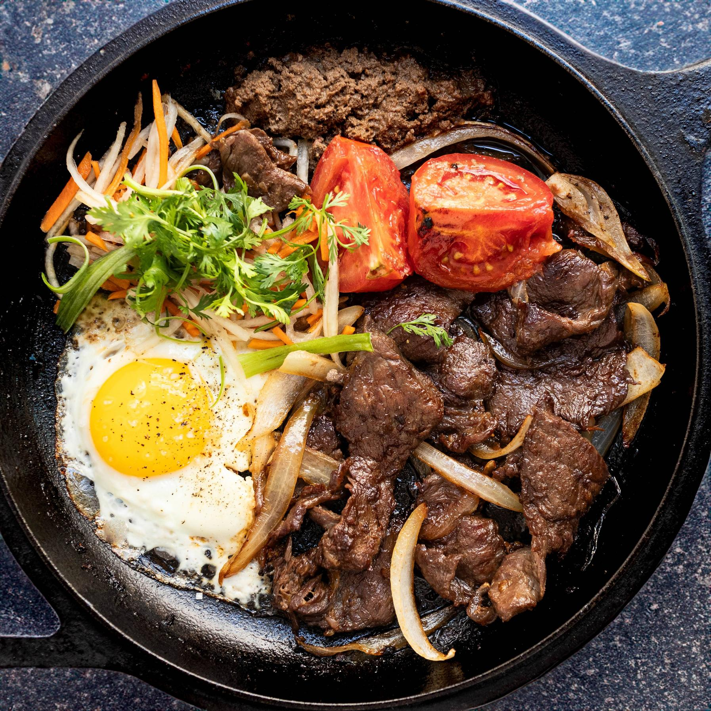

Bo Ne

Description
Bò Né is a delicious dish combining the best Vietnamese and French cuisine. It is a hearty
and satisfying breakfast dish that is also perfect for any time of day. The seared sizzling
steak and eggs are served with pate, tomatoes, onions, sunny-side-up fried egg, pickled vegetables,
and a baguette for scooping.
Ingredients
- 1 lb beef steak
- 2 tablespoons oyster sauce
- 1 teaspoon fish sauce
- 1 tablespoon dark brown sugar
- 2 large garlic cloves(peel and finely chop)
- 1 teaspoon sesame oil
- 4 tablespoons unsalted butter(divided)
- Yellow onion(peel and cut into thin wedges)
- 2 large tomatoes(cut into thick wedges)
- 4 eggs
- 4 small Banh Mi Vietnamese Baguette
Steps
- You can keep the steak whole but I like to cut them into thick slices (about ⅛”) against the
grain for easy eating. In a medium bowl, mix together oyster sauce, soy sauce, fish sauce, dark
brown sugar, garlic, and sesame oil. Add sliced steak to the marinade and toss to coat. Marinate
for at least 15 minutes or overnight in the fridge, covered.
- Heat a single-serving cast-iron pan or skillet over medium-high heat. Add half tablespoon of
butter to the pan. Add the onions (¼ portion) to the pan and cook until they are softened and lightly
charred, about 5 minutes. Add marinated steak (¼ portion) to the pan and cook for about 5 minutes
total, or until it reaches your desired level of doneness if using whole steak.
- Once the steak is about done cooking, add half tablespoon of butter to the pan. Crack an egg into
the butter and cook to your desired doneness. I like mine sunny side up, with a runny yolk.
- Add a few slices of tomato wedges to the pan and cook until slightly charred.
- Garnish with cilantro or green onions. Add pickled vegetables and pate. Serve immediately with a
baguette. Repeat three more time as this recipe makes four servings.
- To enjoy, tear off a piece of baguette and dip it into the runny egg yolk. Use the baguette to scoop
up some of the steak, tomatoes, and pickled vegetables. Add a dollop of pate to your baguette. Take a
bite and enjoy the delicious combination of flavors!